3 Materiaal en methode
3.1 Structuurkwaliteit van de Zwarte Beek
De Zwarte beek (Demerbekken) ontspringt te Helchteren en loopt zuidwestwaarts verder langsheen de grens Hechtel-Eksel en Houthalen-Helchteren doorheen Beringen om verder via Lummen en Halen in Diest uit te monden in de rechteroever van de Demer (Fig. 3.1). De vallei van de Zwarte Beek is één van de meest natuurlijke beekvalleien in Vlaanderen. De Zwarte Beek stroomt vanaf de bron tot de monding in Diest door een groot natuurgebied met meer dan 1500 hectare natuur. Ten westen van de autosnelweg Hasselt-Luik (E313) verbreedt de vallei sterk. In de middenloop ter hoogte van de “Bocht van Laren” in Lummen is de vallei op haar breedst. De Zwarte Beek werd in het verleden rechtgetrokken met het oog op een snellere afvoer en een betere ontwatering van de valleigronden. Door deze rechttrekking verminderde de structuurkwaliteit van de waterloop. De Zwarte Beek wordt actueel voorgesteld als speerpuntgebied in het ontwerp-stroomgebiedbeheerplan 2016-2021. Dit betekent dat de goede waterkwaliteit hier ten laatste in 2021 moet behaald worden. Het verbeteren van de structuurkwaliteit van de waterloop speelt hierin een belangrijke rol. Een interactieve kaart met een overzicht van de verschillende bemonsterde cellen (zie verder) voor de drie verschillende jaren is hier beschikbaar.
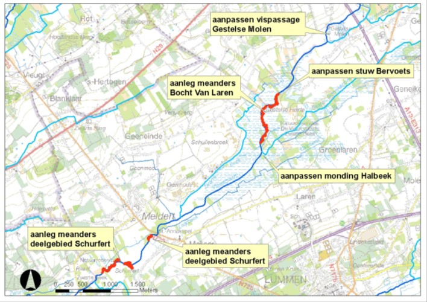
Figuur 3.1: Situering van het studiegebied met een overzicht van de geplande rivierherstelmaatregelen in de Zwarte beek in Lummen.
3.2 Rivierherstelmaatregelen
3.2.1 In het verleden uitgevoerde rivierherstelmaatregelen
In de buurt van de Gestelse Molen in Paal werd in 2004 een natuurinrichtingsproject uitgevoerd. Een geul met 12 overlaten of drempels moest ervoor zorgen dat vissen een hoogteverschil van 1,60 meter tussen de Zwarte Beek en de Oude Beek konden overbruggen. Omdat er onvoldoende water door de geul stroomde was de geul anno 2016 aan het dichtgroeien en verlanden. Op basis van een visstandsonderzoek in 2005 meldt Denayer dat de vispassage aan de Gestelse molen blijkbaar nog niet wordt gevonden door stroomopwaarts migrerende vissen (Denayer, 2005). Begin 2015 werden vijf afgesneden meanders van de bovenloop van de Zwarte Beek opnieuw aangesloten. In totaal werd er 300 meter aan oude meanders uitgegraven. De vrijgekomen grond werd gebruikt om de bestaande rechtgetrokken bovenloop te dempen. Voor het dempen viste de dienst waterlopen van de provincie Limburg de beek af. De werken gebeurden in opdracht van het natuurinrichtingscomité Zwarte Beek en onder leiding van de Vlaamse Landmaatschappij. Door het aansluiten van meanders werd niet alleen het waterbergend vermogen en het meanderend karakter van de beek vergroot, maar ook het leefgebied van de beekprik (zie verder) werd uitgebreid.
3.2.2 Rivierherstelproject Zwarte Beek 2016-2017
Bij de rivierherstelmaatregelen (die in dit rapport een eerste maal worden geëvalueerd) wordt er, naast de sanering van vismigratieknelpunten, beoogd om (1) de structuurkwaliteit van de waterloop te verhogen, (2) het waterbergend vermogen van het valleigebied te herstellen en (3) de landschappelijke en ecologische waarde van de waterloop en de vallei te verhogen. De terreinwerkzaamheden werden opgestart in augustus/september 2016 en beëindigd in het voorjaar van 2017. Het project omvatte de volgende werken:
- Het opnieuw inschakelen van afgesneden meanders over een lengte van ca. 0,7 km in het deelgebied Schurfert. De rechtgetrokken bedding werd slechts deels gedempt i.f.v. hoogwaterafvoer (Fig. 3.1 en 3.3).
- Het opnieuw inschakelen van afgesneden meanders over een lengte van ca. 1,5 km in het deelgebied bocht van Laren. De rechtgetrokken bedding werd hierbij volledig gedempt (Fig. 3.1 en 3.2).
- Het vispasseerbaar maken van de stuw Bervoets, deels door het verondiepen van de stroomafwaartse bedding met een steenbestorting, deels door inschakelen van stroomafwaarts gelegen meanders (Fig. 3.1 en 3.4).
- Het wegwerken van twee bodemvallen m.b.v. een steenbestorting.
- Optimalisatie van de in 2004 aangelegde visdoorgang rond de Gestelse molen (Fig. 3.1).
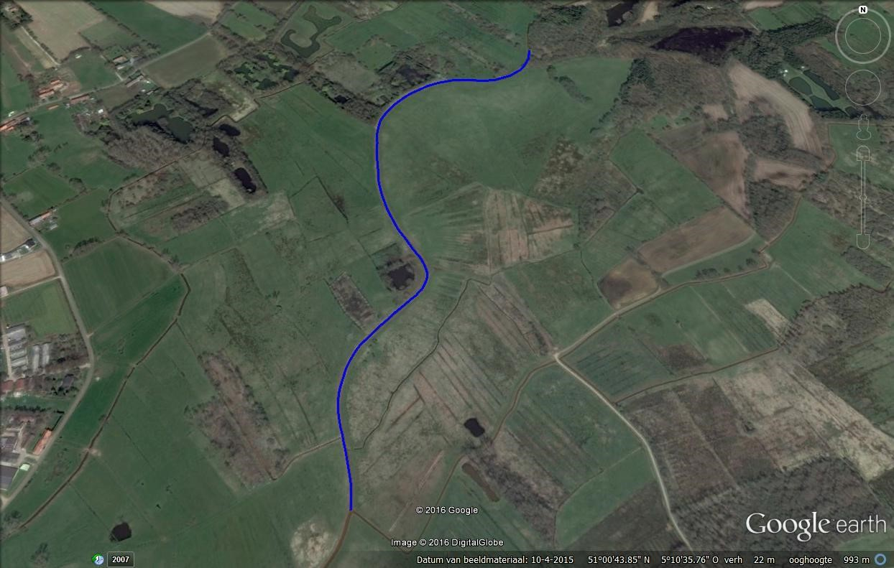
Figuur 3.2: Deelgebied bocht van Laren waar meanders over een lengte van ca. 1,5 km worden ingeschakeld (Foto Google earth 2016).
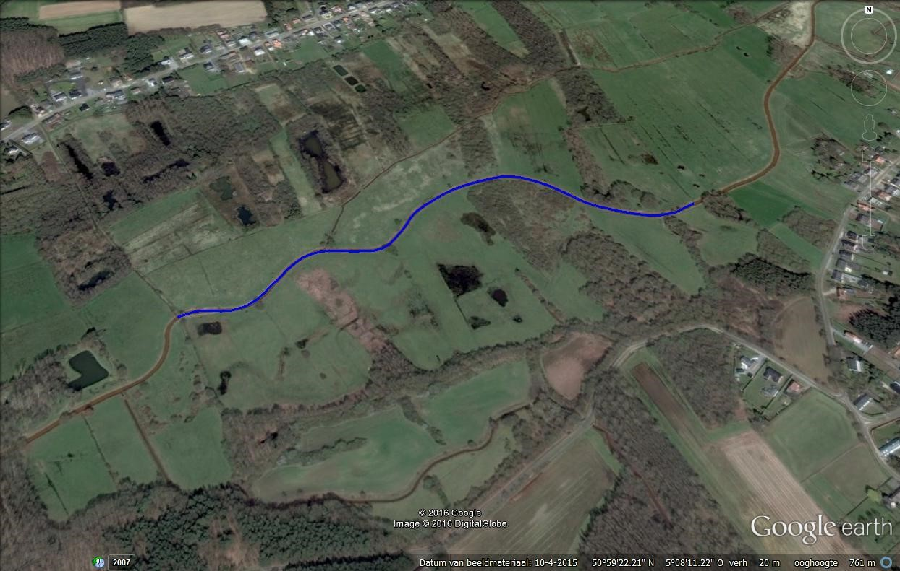
Figuur 3.3: Deelgebied Schurfert waar meanders over een lengte van ca. 0,7 km worden ingeschakeld (Foto Google earth 2016).
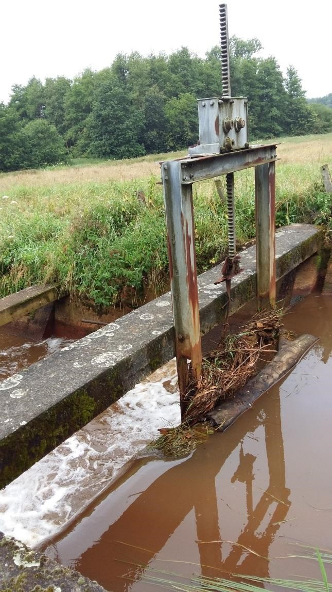
Figuur 3.4: Vismigratieknelpunt Stuw Bervoets (Foto INBO 2016).
3.2.3 Evaluatie van de rivierherstelmaatregelen
De evaluatie van een rivierherstelproject kan gedaan worden door het uitvoeren van metingen voordat de herstelmaatregelen worden uitgevoerd en op het moment dat de nieuwe situatie zich heeft ingesteld en soorten de kans hebben gehad om zich te vestigen: T=<0 en T=X (T=0 is het jaar waarin de herstelmaatregelen worden uitgevoerd). De onderzoeksvragen worden daarbij vertaald naar meetdoelen. De meetdoelen worden geformuleerd volgens het ‘SMART’-principe (Reeze & Lenssen, 2015):
- Specifiek (concreet, gedetailleerd, goed gedefinieerd);
- Meetbaar (kwantitatief weer te geven, te vergelijken met een criterium);
- Acceptabel (uitvoerbaar, actiegericht);
- Realistisch (in termen van kosten);
- Tijdgebonden (is op een bepaald moment te toetsen).
Met het oog op statistische toetsing van het ecologisch effect van de herstelmaatregelen zijn voor de meeste kwaliteitselementen echter minimaal 6 waarnemingen van vóór de ingreep (T=<0) en 6 waarnemingen erna benodigd (T=10). De 6 waarnemingen kunnen overigens verspreid over verschillende locaties, meetjaren of seizoenen worden verzameld. Vanwege de verschillen tussen meetjaren heeft een spreiding over een aantal meetjaren dan de voorkeur (Reeze & Lenssen, 2015). Daarnaast gelden er aandachtspunten voor het tijdstip van monstername. Het tijdstip moet aansluiten op de meetbaarheid van de parameter. Bijvoorbeeld het habitat (o.a. substraat, diepte, …) kan het beste in de zomerperiode, bij laag water, worden opgenomen. In de ideale situatie wordt de monitoring volgens het Before-After-Control-Impact (BACI) model ontworpen (Dahm et al., 2014; Reeze & Lenssen, 2015). In deze onderzoeksopzet worden vier situaties onderzocht en worden alle situaties met elkaar vergeleken (Fig. 3.5):
- het herstelde traject vóór uitvoering van de maatregelen,
- het herstelde traject na uitvoering van de maatregelen,
- een vergelijkbaar ‘controle’-traject vóór uitvoering van de maatregelen in het herstelde traject,
- een vergelijkbaar ‘controle’-traject na uitvoering van de maatregelen in het herstelde traject.
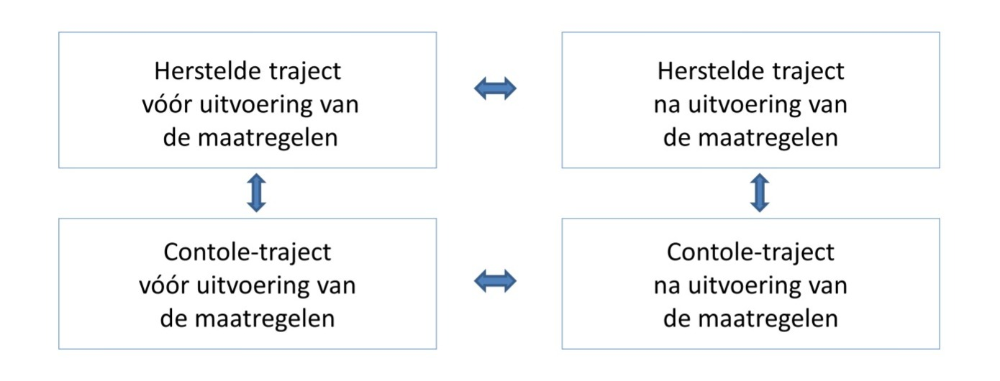
Figuur 3.5: Onderzoeksopzet volgens het ‘Before-After-Control-Impact’-concept.
3.2.3.1 Nulsituatie: vergelijking in de tijd
Een vergelijking van de toestand vóór en na de ingreep heeft als voordeel dat de locatie en positie in het beekdal en stroomgebied onveranderd zijn gebleven. Maar meestal zijn er meer verschillen tussen de periode vóór en na uitvoering van de maatregelen dan alleen de uitgevoerde maatregelen. Vóór uitvoering van de ingreep kan het bijvoorbeeld veel droger of natter zijn geweest dan na de ingreep. Waargenomen verschillen zijn dan niet per se het gevolg van de ingreep. Bovendien kunnen er in de praktijk geen of onvoldoende gegevens voorhanden zijn over de nulsituatie. In die gevallen biedt een controle-traject uitkomst. Aangezien de bedekking van de vegetatie impact heeft op de waterretentie en stroming in de bedding en dus ook invloed heeft op de waterdiepte, is het aangewezen om de bemonstering steeds in dezelfde omstandigheden uit te voeren om een vergelijking over de verschillende bemonsteringsjaren mogelijk te maken. Dit gebeurt het liefst vóór het uitvoeren van de jaarlijkse maaibeurt.
3.2.3.2 Controle-traject: vergelijking in de ruimte
Bij een vergelijking in de ruimte wordt het herstelde traject na uitvoering van de maatregelen vergeleken met een controle-traject waar geen maatregelen zijn genomen. Dit traject moet zoveel mogelijk vergelijkbaar zijn met het heringerichte traject. Vergelijkbaar wil zeggen: tenminste identiek qua afvoer, verhang, diepte en breedte vóór de ingreep, beschaduwing en waterkwaliteit. Verschillen tussen beide trajecten na verloop van tijd geven dan het effect van de maatregel weer. De keuze van een controle-traject vergt zorgvuldigheid: trajecten moeten zoveel mogelijk identiek zijn, met uitzondering van de eigenschappen die door de beekherstelmaatregelen veranderd worden. Bij voorkeur ligt het controle-traject in hetzelfde waterlichaam, stroomopwaarts van het heringerichte traject. Door een locatie te kiezen in hetzelfde waterlichaam worden verschillen in de samenstelling van water en bodem zoveel mogelijk voorkomen. De keuze voor een stroomopwaarts gelegen locatie heeft te maken met de verspreiding van macrofauna en waterplanten (via zaden en stekjes): deze vindt meestal in stroomafwaartse richting plaats. Door de keuze van een stroomopwaarts gelegen locatie worden de resultaten van het controle-traject zo min mogelijk beïnvloed. Een vergelijking van de toestand met een controle-traject heeft als voordeel dat de (weers)-omstandigheden van beide trajecten goed vergelijkbaar zijn. Als de maatregelen echter betrekking hebben op belangrijke kenmerken in het stroomgebied, zoals het afvoerregime, dan is gebruik van een controle-traject per definitie onmogelijk. Een ander nadeel is dat sommige organismegroepen ook stroomopwaarts migreren, zoals vissen en macrofauna met vliegende adulten (kokerjuffers, haften, muggen e.d.) en zo de resultaten van het controletraject beïnvloeden. Omdat het traject zoveel mogelijk vergelijkbaar moet zijn met de heringerichte trajecten (‘Schurfert’ en ‘Bocht van Laren’) werd er voor gekozen om het controle-traject tussen de twee deelgebieden in te kiezen. Opwaarts van de ‘Bocht van Laren’ zijn er geen vergelijkbare trajecten omwille van de gevolgen door opstuwing ter hoogte van de ‘Gestelse molen’ en omwille van de gedeeltelijke verwijdering van de ‘Stuw Bervoets’ (waardoor de situatie voor en na verschillend is).
3.2.4 Evaluatie van de Zwarte Beek voor en na de rivierherstelmaatregelen
3.2.4.1 Nulsituatie en controle-traject
Omdat zowel de vergelijking in de tijd als in de ruimte voor- en nadelen hebben is een combinatie van beide ideaal. De onderzoeksopzet voor de Zwarte Beek ziet er naar analogie met de algemene onderzoeksopzet volgens het BACI-concept uit als beschreven in Fig. 3.6.
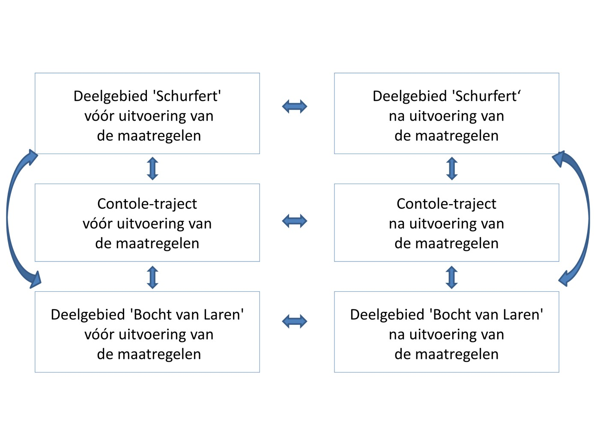
Figuur 3.6: Schematische voorstelling van de onderzoeksopzet voor evaluatiede Zwarte Beek met deelgebieden ‘Schurfert’ en ‘Bocht van Laren’ volgens het BACI-concept.
3.2.4.2 Microhabitat
Het fysische habitat van de Zwarte Beek kan eenvoudig beschreven worden als een combinatie van stroomsnelheid, waterdiepte, substraat en verschillende cover-types zoals waterplanten, stenen en hout. In de deelgebieden ‘Schurfert’ en ‘Bocht van Laren’ zijn de ontwikkeling van gunstige habitatstructuren en micro-condities te verwachten omwille van de rivierherstelmaatregelen die uitgevoerd worden vanaf augustus 2016. Op basis van een voorafgaand terreinbezoek (19/5/2015), aangeleverd kaartmateriaal en overleg met de opdrachtgever werd bepaald in welke zones het (micro)habitat wordt opgemeten (te herstellen trajecten versus ongewijzigde trajecten). Er werd voorgesteld om drie grote secties van 600 meter te bestuderen, met name in beide deelgebieden en een controle-sectie tussen beide deelgebieden in (Fig. 3.7, 3.8 en 3.9).
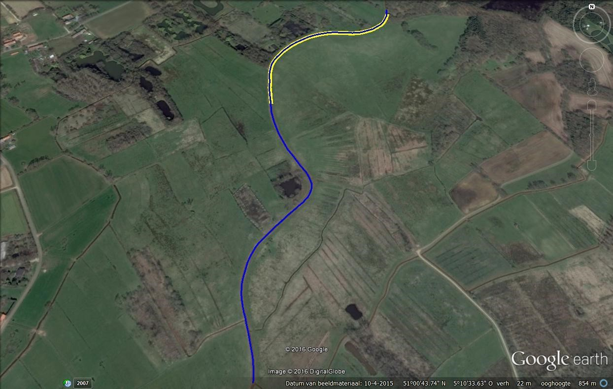
Figuur 3.7: Deelgebied ‘Bocht van Laren’ (blauw) met aanduiding van sectie van 600 meter (geel) (Foto Google earth 2016).
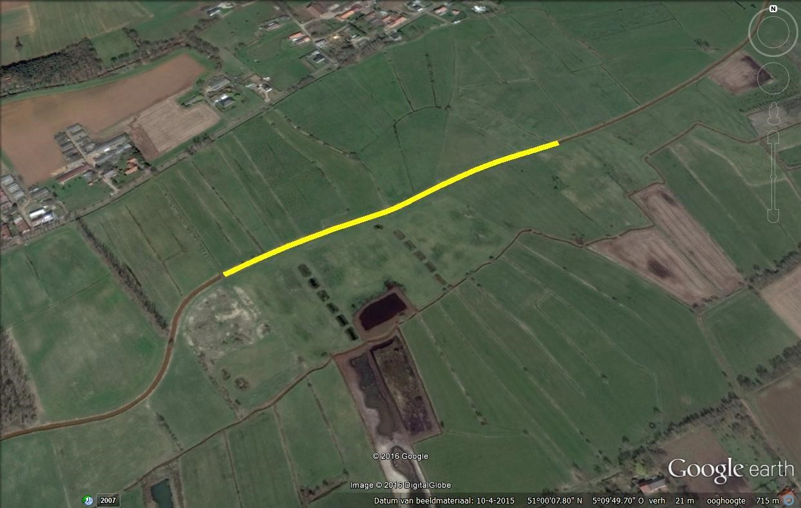
Figuur 3.8: Deelgebied ‘Controle’ (blauw) met aanduiding van sectie van 600 meter (geel) (Foto Google earth 2016).
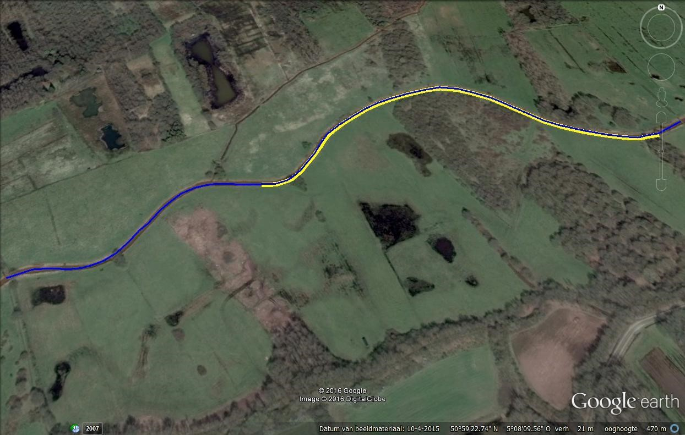
Figuur 3.9: Deelgebied ‘Schurfert’ (blauw) met aanduiding van sectie van 600 meter (geel) (Foto Google earth 2016).
De drie grote trajecten werden ingedeeld in kleinere trajecten van 50 meter, waarbij afwisselend een traject werd opgemeten aan de hand van transecten en een traject werd overgeslagen. Uiteindelijk werden er per 600 meter zes trajecten van 50 meter opgemeten die niet aan elkaar grenzen. Om een gedetailleerd beeld te krijgen van de vorm van de rivier wordt per 50 m traject om de 3,33 m een transect opgemeten. Per 50 m traject worden bijgevolg 15 transecten opgemeten. Een transect is een dwarsdoorsnede van de rivier. Per transect worden enkele punten opgemeten langs een lijn die van een punt op de rechter oever (RO) naar een punt op de linker oever (LO) loopt of omgekeerd van LO naar RO. Deze lijn staat loodrecht op de middellijn van de rivier. Het aantal meetpunten in het water zou telkens vijf moeten zijn. De breedte van de rivier (van de waterlijn op de ene oever tot de waterlijn op de andere oever) wordt daarvoor ingedeeld in vijf denkbeeldige cellen, waarbij ieder meetpunt in het water het middelpunt is van 1 van de 5 cellen (Fig. 3.10). Het habitat wordt opgemeten voor de volledige cel. De stroomsnelheid en diepte worden opgemeten in het centrum van iedere cel. Door deze werkwijze ontstaat een virtueel raster van cellen waarbinnen alle metingen gebeuren. Binnen elke cel inventariseren we het microhabitat (Fig. 3.11). Een interactieve kaart met een overzicht van de verschillende bemonsterde cellen voor de drie verschillende jaren is hier beschikbaar.
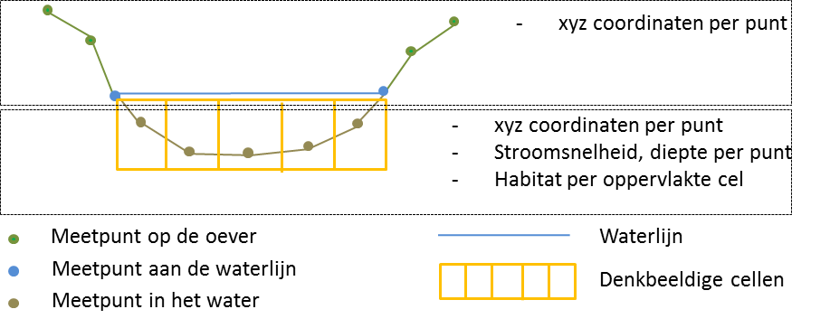
Figuur 3.10: Methode voor de meting van één transect.
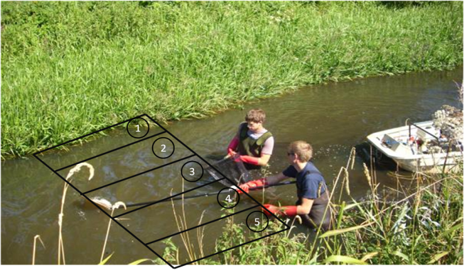
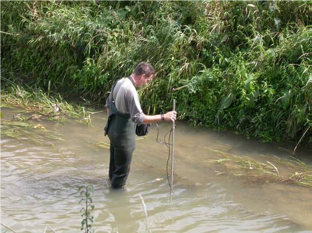
Figuur 3.11: Cellenraster waarbinnen de veldmetingen gebeuren (boven), zoals bijvoorbeeld het opmeten van de stroomsnelheid met behulp van een stroomsnelheidsmeter (onder) (Foto’s David Buysse).
Het microhabitat in de drie deelgebieden (Schurfert, Laren en Controle) werd gekarakteriseerd door onderstaande variabelen op te meten.
Stroomsnelheid:
Met behulp van een stroomsnelheidsmeter wordt de stroomsnelheid tot op 1 cm/s nauwkeurig gemeten. De elektromagnetische sensor van de stroomsnelheidsmeter is bevestigd op een ijzeren peilstok waarop de diepte (tot op 1 cm nauwkeurig) wordt afgelezen (Fig. 3.11):
- 10 cm boven bodem
- 10 cm boven dik pakket submerse waterplanten
Diepte:
- Vanop bodem
- Waterkolom boven dik pakket submerse waterplanten
Cover:
- Holle oever
- Waterplanten
- Cover Stenen
- Cover Hout (Grof hout = Coarse woody debris)
- Cover “Ander “
- Inhangende cover (= riparian cover): - Houtig of Grazig
- Overhangende cover
Substraat:
- Debris / Organisch materiaal
- Slib / Losse klei (Ø < 4 µm)
- Leem (4 µm < Ø < 63 µm)
- Zand (63 µm < Ø < 2 mm)
- Gravel/grind:
- Fijn (2 mm < Ø < 8 mm)
- Grof (8 mm < Ø < 32 mm)
- Steen (32 mm < Ø)
- Klei
- Ijzerzandsteen
3.2.4.3 Meetfrequentie riviermorfologie
De meetfrequenties sluiten aan bij de snelheid waarmee veranderingen naar verwachting plaatsvinden (Reeze & Lenssen, 2015). Morfologische veranderingen vinden meestal in de eerste jaren na aanleg plaats en daarna vooral tijdens (hoogwater-) gebeurtenissen (Eekhout & Hoitink, 2014). Een vuistregel voor de morfologische aanpassingstijd van beken naar herinrichting is ca. 10 jaar (Eekhout, 2014). Op basis daarvan wordt in aansluiting op het handboek geomorfologisch beekherstel (Makaske & Maas, 2015), een 10-jarige meetcyclus aanbevolen waarbij de tijd tussen de opname toeneemt (Reeze & Lenssen, 2015). In samenspraak met de VMM werd overeengekomen om de morfologische veranderingen in eerste instantie op T-1 en T2 op te meten. De metingen die voor augustus 2016 worden uitgevoerd, de T-1 meting, gelden als controlemetingen omdat waargenomen verschillen tijdens de daaropvolgende T 0 meting niet per se het gevolg van de rivierherstelmaatregelen zijn. Tweeëneenhalf jaar na de uitvoering van de herstelwerken (i.e. zomer 2019) wordt de T 2 opgemeten voor wat betreft de vorm / het fysisch habitat van de rivier (Tabel 1). In 2024 wordt een derde meetcampagne uitgevoerd.
In de Zwarte Beek worden zowel tijdens de meetcampagnes van 2016, 2019 en 2024 in totaal 270 transecten en dus 1350 punten opgemeten, met name:
- Zes 50 m trajecten in deelgebied ‘Schurfert’ x 15 transecten = 90 transecten
- Zes 50 m trajecten in ‘controletraject’ x 15 transecten = 90 transecten
- Zes 50 m trajecten in deelgebied ‘Bocht van Laren’ x 15 transecten = 90 transecten
Een staalname met vijf meetpunten in de breedte, 15 transecten per 50 m traject en zes 50 m trajecten per deelgebied, moet volstaan om een representatieve steekproef te zijn voor het habitataanbod binnen het opgemeten deelgebied of controlegebied.
3.3 Monitoring biologische kwaliteitselementen
Om de ecologische toestand van de Zwarte Beek te beoordelen voor en na de rivierherstelmaatregelen worden naast hydromorfologische kenmerken (cfr. de structuurkwaliteit) ook biologische kwaliteitselementen in rekening gebracht. De biologische kwaliteitselementen macrofyten, macro-invertebraten en vissen worden beoordeeld naar analogie met de beoordeling voor de Europese kaderrichtlijn Water. De beoordeling voor elk biologisch kwaliteitselement wordt uitgedrukt in de vorm van een Ecologische Kwaliteitscoëfficiënt (EKC) of Ecological Quality Ratio (EQR) die een waarde tussen 0 en 1 kan aannemen, waarbij 1 een zeer goede en 0 een zeer slechte ecologische toestand vertegenwoordigt. Deze EKC’s worden bij natuurlijke waterlichamen opgedeeld in 5 kwaliteitsklassen (zeer goed, goed, matig, ontoereikend en slecht). Voor elk kwaliteitselement moet een beoordeling goed of zeer goed (respectievelijk goed of hoger) gehaald worden. De Zwarte Beek is gecatalogiseerd als natuurlijk waterlichaam. Staalnamepunten van het INBO voor het biologisch kwaliteitselement ‘vissen’ werden zo veel mogelijk afgestemd op de locaties voor de staalnamepunten van VMM, Afdeling Rapportering Water, voor de biologische kwaliteitselementen ‘macrofyten’ en ‘macro-invertebraten’.
3.3.1 Vissen
3.3.1.1 Elektrisch vissen
Het basisprincipe van elektrisch vissen is het opwekken van een elektrisch veld in het water tussen twee erin ondergedompelde elektroden, met de bedoeling een zwemreactie uit te lokken bij de vissen die zich in de buurt van de elektroden bevinden, of deze tenminste te verdoven om ze bij het bovendrijven met een net op te scheppen (Coeck, 1996).
3.3.1.2 Visindex (EQR)
Op basis van de eerste afvissing voor elk traject werd de EQR score berekend. Deze score wordt ook de visindex genoemd.
3.3.1.3 Gemeenschapsstructuur
3.3.1.3.1 Schatten van de populatiegroottes
Per deelgebied werden 6 trajecten van 50 m geselecteerd en elektrisch bevist. Deze bevissingen werden uitgevoerd bij een basisdebiet van de Zwarte Beek. Hierbij werden de trajecten zowel stroomop- als afwaarts afgezet met bloknetten (Fig. 3.12). Alle trajecten werden drie maal na elkaar bevist zodat de populatiegrootte kon worden geschat via de depletiemethode (Carle & Strub, 1978).
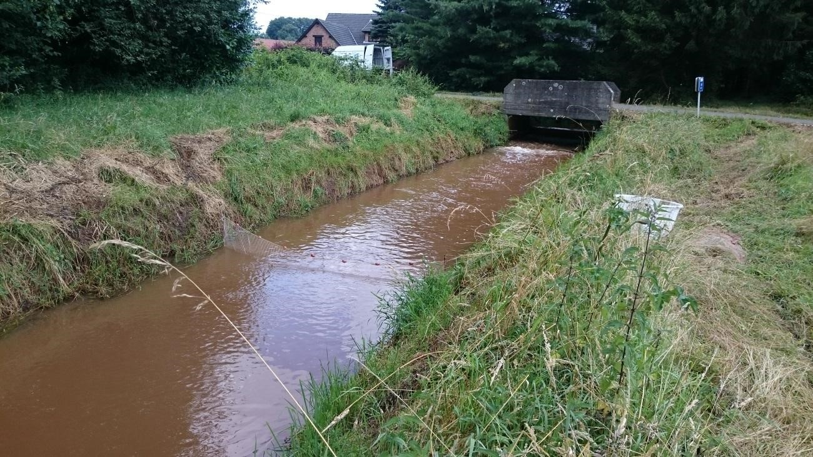
Figuur 3.12: Bloknet in de Zwarte Beek aan het stroomopwaarts einde van een traject (Foto: INBO).
3.3.1.3.2 Lengtefrequentieverdeling
Door de sterke relatie met de leeftijd, kan de lengteverdeling van de gevangen vissoorten een indicatie geven van de kwaliteit van de bemonsterde populaties. Hierbij wordt verondersteld dat gezonde populaties bestaan uit individuen van alle lengteklassen binnen het lengtebereik voor een bepaalde soort. Analoog zullen minder gezonde populaties enkel individuen uit een beperkt aantal lengteklassen bevatten.
3.3.2 Macro-invertebraten
De analyse van macro-invertebraten is gebaseerd op de gegevensverzameling van de VMM. De beoordeling van rivieren gebeurt conform de Europese Kaderrichtlijn Water (KRW) aan de hand van de Multimetrische Macro-Invertebratenindex Vlaanderen (MMIF) (Gabriels, 2010). Die index gaat van dezelfde principes uit als de BBI maar is conform een aantal bijkomende vereisten van de KRW (o.a. typespecificiteit). Die index beoordeelt de macro-invertebratenfauna op basis van de volgende vijf criteria:
- totaal aantal gevonden taxa;
- aantal gevonden taxa behorende tot een van de meer gevoelige groepen Ephemeroptera (eendagsvliegen), Plecoptera (steenvliegen) of Trichoptera (kokerjuffers);
- aantal andere gevonden gevoelige taxa;
- de Shannon-Weaverindex, een maat voor diversiteit;
- de gemiddelde tolerantiescore: het gemiddelde van de tolerantiescore van alle aangetroffen taxa, een maat voor de gemiddelde gevoeligheid van alle voorkomende taxa.
Op basis van de score voor elk van die deelmaatlatten krijgt een staal een eindbeoordeling in de vorm van een EQR of MMIF-score, een cijfer tussen 0 en 1. Die beoordelingsschaal wordt verder ingedeeld in 5 kwaliteitsklassen, nl. zeer goed, goed, matig, ontoereikend en slecht.
3.3.3 Macrofyten
De analyse van de macrofyten werd gebaseerd op de bemonsterde trajecten van VMM. De beoordelingsmethode van macrofyten is opgebouwd uit vier deel-indices (Leyssen et al., 2005, 2006):
- de index typespecificiteit: geeft aan in welke mate de aangetroffen plantengemeenschap kenmerkend is voor het type waterloop;
- de index verstoring: is rechtstreeks gerelateerd tot de mate van eutrofiëring op het geïnventariseerde traject door de aanwezigheid van nutriënttolerante soorten;
- de index groeivormen: is een aanwijzing voor de structuur van water-en oevervegetatie. De diversiteit aan groeivormen geeft enerzijds aan in welke mate hydromorfologische omstandigheden en waterkwaliteit gewijzigd werden en anderzijds is deze index een maat voor de volledigheid van de vegetatie, gezien vanuit het ecologisch functioneren van de vegetatie in het watersysteem, de rijkdom aan habitats, schuil-, voedsel- en paaiplaatsen en het voedselaanbod voor andere organismen;
- index vegetatieontwikkeling: de mate waarin de ondergedoken waterplanten zich ontwikkelen.
Om de ecologische kwaliteitscoëfficiënt te berekenen, worden de deelmaatlatscores van de verschillende trajecten op waterlichaamniveau uitgemiddeld. Het is de slechtste deelmaatlat die de uiteindelijke score voor het waterlichaam bepaalt. De EQR kan dus variëren tussen 0 en 1. De beoordelingsschaal wordt verder ingedeeld in 5 kwaliteitsklassen.
Referenties
 Bruneel, S., et. al. (2026). 10.21436/inbor.141733221
Bruneel, S., et. al. (2026). 10.21436/inbor.141733221